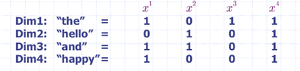

Naive Bayes
Reel sayılar arasında bağlantı kurmak için istatistikte regresyon kullanılır. Eğer reel değerleri, (mesela) iki kategorik grup arasında seçmek için kullanmak istenirse, bunun için lojistik regresyon gibi teknikler de vardır.
Fakat kategoriler / gruplar ile başka kategorik gruplar arasında bağlantılar kurulmak istenirse, standart istatistik yöntemleri faydalı olamıyor. Bu gibi ihtiyaçlar için yapay öğrenim (machine learning) dünyasından Naive Bayes gibi tekniklere bakmamız lazım.
Not: Daha ilerlemeden belirtelim, bu tekniğin ismi Naive Bayes ama bu tanım tam doğru değil, çünkü NB Olasılık Teorisi'nden bilinen Bayes Teorisini kullanmıyor.
Öncelikle kategorik değerler ile ne demek istediğimizi belirtelim. Reel sayılar $0.3423, 2.4334$ gibi değerlerdir, kategorik değerler ile ise mesela bir belge içinde 'a','x' gibi harflerin mevcut olmasıdır. Ya da, bir evin 'beyaz', 'gri' renkli olması.. Burada öyle kategorilerden bahsediyoruz ki istesek te onları sayısal bir değere çeviremiyoruz; kıyasla mesela bir günün 'az sıcak', 'orta', 'çok sıcak' olduğu verisini kategorik bile olsa regresyon amacıyla sayıya çevirip kullanabilirdik. Az sıcak = 0, orta = 1, çok sıcak = 2 değerlerini kullanabilirdik, regresyon hala anlamlı olurdu (çünkü arka planda bu kategoriler aslında sayısal sıcaklık değerlerine tekabül ediyor olurlardı). Fakat 'beyaz', 'gri' değerlere sayı atamanın regresyon açısından bir anlamı olmazdı, hatta bunu yapmak yanlış olurdu. Eğer elimizde fazla sayıda 'gri' ev verisi olsa, bu durum regresyon sırasında beyaz evlerin beyazlığını mı azaltacaktır?
İşte bu gibi durumlarda kategorileri olduğu gibi işleyebilen bir teknik gerekiyor. Bu yazıda kullanacağımız örnek, bir belgenin içindeki kelimelere göre kategorize edilmesi. Elimizde iki türlü doküman olacak. Bir tanesi Stephen Hawking adlı bilim adamının bir kitabından 3 sayfa, diğeri başkan Barack Obama'nın bir kitabından 3 sayfa. Bu sayfalar ve içindeki kelimeler NB yöntemini "eğitmek" için kullanılacak, sonra NB tarafından hiç görülmemiş yeni sayfaları yöntemimize kategorize ettireceğiz.
Çok Boyutlu Bernoulli ve Kelimeler

Bir doküman ile içindeki kelimeler arasında nasıl bağlantı kuracağız? Burada olasılık teorisinden Çok Boyutlu Bernoulli (Multivariate Bernoulli) dağılımını kullanacağız. Üstteki resimde görüldüğü gibi her doküman bir $x^i$ rasgele değişkeniyle temsil edilecek. Tek boyutlu Bernoulli değişkeni '1' ya da '0' değerine sahip olabilir, çok boyutlu olanı ise bir vektör içinde '1' ve '0' değerlerini taşıyabilir. İşte bu vektörün her hücresi, önceden tanımlı bir kelimeye tekabül edecek, ve bu kelimeden bir doküman içinde en az bir tane var ise, o hücre '1' değerini taşıyacak, yoksa '0' değerini taşıyacak. Üstteki örnekte 2. kelime "hello" ve 4. doküman içinde bu kelimeden en az bir tane var, o zaman $x_2^4 = 1$. Tek bir dokümanı temsil eden dağılımı matematiksel olarak şöyle yazabiliriz:
$$ p(x_1,...,x_{D}) = \prod_{d=1}^{D} p(x_d)=\prod_{d=1}^{D} \alpha_d^{x_d}(1-\alpha_d)^{1-x_d} $$
Bu formülde her $d$ boyutu bir tek boyutlu Bernoulli, ve bir doküman için tüm bu boyutların ortak (joint) dağılımı gerekiyor, çarpımın sebebi bu. Formüldeki $\alpha_d$ bir dağılımı "tanımlayan" değer, $\alpha$ bir vektör, ve unutmayalım, her "sınıf" için NB ayrı ayrı eğitilecek, ve her sınıf için farklı $\alpha$ vektörü olacak. Yani Obama'nın kitapları için $\alpha_2 = 0.8$ olabilir, Hawking kitabı için $\alpha_2 = 0.3$ olabilir. Birinin kitabında "hello" kelimesi olma şansı fazla, diğerinde pek yok. O zaman NB'yi "eğitmek" ne demektir? Eğitmek her sınıf için yukarıdaki $\alpha$ değerlerini bulmak demektir.
Bunun için istatistikteki "olurluk (likelihood)" kavramını kullanmak yeterli. Olurluk, bir dağılımdan geldiği farzedilen bir veri setini alır, tüm veri noktalarını teker teker olasılığa geçerek olasılık değerlerini birbirine çarpar. Sonuç ne kadar yüksek çıkarsa, bu verinin o dağılımdan gelme olasılığı o kadar yüksek demektir. Bizim problemimiz için tek bir sınıfın olurluğu, o sınıf içindeki tüm (N tane) belgeyi kapsamalıdır, tek bir "veri noktası" tek bir belgedir, o zaman:
$$ L(\theta) = \prod_{i=1}^N \prod_{d=1}^{D} p(x_d^i) = \prod_{i=1}^N \prod_{d=1}^{D} \alpha_d^{x_d^i}(1-\alpha_d)^{1-x_d^i} $$
$\theta$ bir dağılımı tanımlayan her türlü değişken anlamında kullanıldı, bu örnekte içinde sadece $\alpha$ var.
Devam edelim: Eğer $\alpha$'nin ne olduğunu bilmiyorsak (ki bilmiyoruz -eğitmek zaten bu demek-) o zaman maksimum olurluk (maximum likelihood) kavramını resme dahil etmek gerekli. Bunun için üstteki olurluk formülünün $\alpha$'ya göre türevini alıp sıfıra eşitlersek, bu formülden bir maksimum noktasındaki $\alpha$ elimize geçecektir. İşte bu $\alpha$ bizim aradığımız değer. Veriyi en iyi temsil eden $\alpha$ değeri bu demektir. Onu bulunca eğitim tamamlanır.
Türev almadan önce iki tarafın log'unu alalım, böylece çarpımlar toplamlara dönüşecek ve türevin formülün içine nüfuz etmesi daha kolay olacak.
$$ \log(L) = \sum_{i=1}^N \sum_{d=1}^{D} {x_d^i}\ log (\alpha_d) + (1-x_d^i)\ log (1-\alpha_d) $$
Türevi alalım:
$$ \frac{dlog(L)}{d\alpha_d} = \sum_{i=1}^N \bigg( \frac{x_d^i}{\alpha_d} - \frac{1-x_d^i}{1-\alpha_d} \bigg) = 0 $$
1- $\alpha_d$'ye göre türev alırken $x_d^i$'ler sabit sayı gibi muamele görürler. 2- log'un türevi alırken log içindeki değerlerin türev alınmış hali bölümün üstüne, kendisini olduğu gibi bölüm altına alınır, örnek $dlog(-x)/dx = -1/x$ olur üstteki eksi işaretinin sebebi bu.
Peki $\sum_{d=1}^{D}$ nereye gitti? Türevi $\alpha_d$'ye göre alıyoruz ve o türevi alırken tek bir $\alpha_d$ ile ilgileniyoruz, mesela $\alpha_{22}$, bunun haricindeki diğer tüm $\alpha_?$ değerleri türev alma işlemi sırasında sabit kabul edilirler, türev sırasında sıfırlanırlar. Bu sebeple $\sum_{d=1}^{D}$ içinde sadece bizim ilgilendiğimiz $\alpha_d$ geriye kalır. Tabii ki bu aynı zamanda her $d=1,2,..D$, $\alpha_d$ için ayrı bir türev var demektir, ama bu türevlerin hepsi birbirine benzerler, yani tek bir $\alpha_d$'yi çözmek, hepsini çözmek anlamına gelir.
Devam edelim:
$$ \sum_{i=1}^N \bigg( \frac{x_d^i}{\alpha_d} - \frac{1-x_d^i}{1-\alpha_d} \bigg) = \frac{N_d}{\alpha_d} - \frac{N-N_d}{1-\alpha_d} = 0 $$
$\sum_{i=1}^N x_d^i = N_d$ olarak kabul ediyoruz, $N_d$ tüm veri içinde $d$ boyutu (kelimesi) '1' kaç tane hücre olduğunu bize söyler. $x_d^i$ ya '1' ya '0' olabildiğine göre bir $d$ için, tüm $N$ hücrenin toplamı otomatik olarak bize kaç tane '1' olduğunu söyler. Sonra:
$$ \frac{N_d}{\alpha_d} - \frac{N-N_d}{1-\alpha_d} = 0 $$
$$ \frac{1-\alpha_d}{\alpha_d} = \frac{N-N_d}{N_d} $$
$$ \frac{1}{\alpha_d} - 1 = \frac{N}{N_d} - 1 $$
$$ \frac{1}{\alpha_d} = \frac{N}{N_d} $$
$$ \alpha_d = \frac{N_d}{N} $$
Python Kodu
$\alpha_d$'nin formülünü buldumuza göre artık kodu yazabiliriz. İlk önce bir dokümanı temsil eden çok boyutlu Bernoulli vektörünü ortaya çıkartmamız lazım. Bu vektörün her hücresi belli bir kelime olacak, ve o kelimelerin ne olduğunu önceden kararlaştırmamız lazım. Bunun için her sınıftaki tüm dokümanlardaki tüm kelimeleri içeren bir sözlük yaratırız:
import re
import math
words = {}
# find all words in all files, creating a
# global dictionary.
base = './data/'
for file in ['a1.txt','a2.txt','a3.txt',
'b1.txt','b2.txt','b3.txt']:
f = open (base + file)
s = f.read()
tokens = re.split('\W+', s)
for x in tokens: words[x] = 0.
hawking_alphas = words.copy()
for file in ['a1.txt','a2.txt','a3.txt']:
words_hawking = set()
f = open (base + file)
s = f.read()
tokens = re.split('\W+', s)
for x in tokens:
words_hawking.add(x)
for x in words_hawking:
hawking_alphas[x] += 1.
obama_alphas = words.copy()
for file in ['b1.txt','b2.txt','b3.txt']:
words_obama = set()
f = open (base + file)
s = f.read()
tokens = re.split('\W+', s)
for x in tokens:
words_obama.add(x)
for x in words_obama:
obama_alphas[x] += 1.
for x in hawking_alphas.keys():
hawking_alphas[x] = hawking_alphas[x] / 3.
for x in obama_alphas.keys():
obama_alphas[x] = obama_alphas[x] / 3.
def prob(xd, alpha):
return math.log(alpha*xd + 1e-10) + \
math.log((1.-alpha)*(1.-xd) + 1e-10)
def test(file):
test_vector = words.copy()
words_test = set()
f = open (base + file)
s = f.read()
tokens = re.split('\W+', s)
for x in tokens:
words_test.add(x)
for x in words_test:
test_vector[x] = 1.
ob = 0.
ha = 0.
for x in test_vector.keys():
if x in obama_alphas:
ob += prob(test_vector[x], obama_alphas[x])
if x in hawking_alphas:
ha += prob(test_vector[x], hawking_alphas[x])
print "obama", ob, "hawking", ha, \
"obama", ob > ha, "hawking", ha > ob
print "hawking test"
test('a4.txt')
print "hawking test"
test('a5.txt')
print "obama test"
test('b4.txt')
print "obama test"
test('b5.txt')
hawking test
obama -34048.7734496 hawking -32192.3692113 obama False hawking True
hawking test
obama -33027.3182425 hawking -32295.7149639 obama False hawking True
obama test
obama -32531.9918709 hawking -32925.037558 obama True hawking False
obama test
obama -32205.4710748 hawking -32549.6924713 obama True hawking False
Test için yeni dokümanı kelimelerine ayırıyoruz, ve her kelimeye tekabül eden alpha vektörlerini kullanarak bir yazar için toplam olasılığı hesaplıyoruz. Nasıl? Her kelimeyi $\alpha_d^{x_d}(1-\alpha_d)^{1-x_d}$ formülüne soruyoruz, yeni dokümanı temsilen elimizde bir $[1,0,0,1,0,0,...,1]$ şeklinde bir vektör olduğunu farz ediyoruz, buna göre mesela $x_1=1$, $x_2=0$. Eğer bir $d$ kelimesi yeni belgede "var" ise o kelime için $x_d = 1$ ve bu durumda $\alpha_d^{x_d} = \alpha_d^{1} = \alpha_d$ haline gelir, ama formülün öteki tarafı yokolur, $(1-\alpha_d)^{1-x_d} = (1-\alpha_d)^0 = 1$, o zaman $\alpha_d \cdot 1 = \alpha_d$.
Çarpım diyoruz ama biz aslında sınıflama sırasında $\alpha_d^{x_d}(1-\alpha_d)^{1-x_d}$ çarpımı yerine yine log() numarasını kullandık; çünkü olasılık değerleri hep 1'e eşit ya da ondan küçük sayılardır, ve bu küçük değerlerin birbiriyle sürekli çarpımı nihai sonucu aşırı fazla küçültür. Aşırı ufak değerlerle uğraşmamak için olasılıkların log'unu alıp birbirleri ile toplamayı seçtik, yani hesapladığımız değer $x_d \cdot log(\alpha_d) + (1-x_d) \cdot \log(1-\alpha_d)$
Fonksiyon prob içindeki 1e-7 kullanımı neden? Bu
kullanım log numarasını yapabilmek için -- sıfır değerinin log değeri
tanımsızdır, bir kelime olmadığı zaman log'a sıfır geleceği için hata
olmaması için log içindeki değerlere her seferinde yeterince küçük bir
sayı ekliyoruz, böylece pür sıfırla uğraşmak zorunda kalmıyoruz. Sıfır
olmadığı zamanlarda çok eklenen çok küçük bir sayı sonuçta büyük
farklar (hatalar) yaratmıyor.
Toparlarsak, yeni belge a4.txt için iki tür alpha
değerleri kullanarak iki farklı log toplamını hesaplatıyoruz. Bu iki
toplamı birbiri ile karşılaştırıyoruz, hangi toplam daha büyükse,
dokümanın o yazardan gelmesi daha olasıdır, ve o seçimimiz o yazar
olur.
Kaynaklar
[1] Jebara, T., Columbia U. COMS 4771 Machine Learning Lecture Notes, Lecture 7